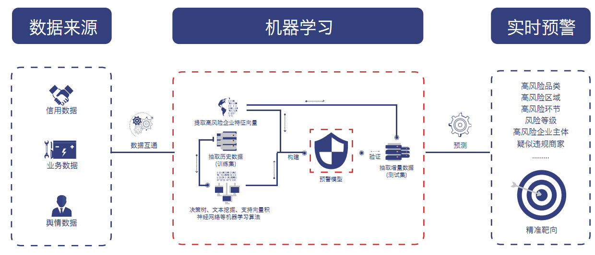

项目背景
民以食为天，消费者能够“吃得好，吃得安全”，是政府食品安全监管部门重点关心的社会问题。然而，随着我国市场经济的发展和经济体制改革，食品安全问题频发安全形势、舆论环境严峻，政府食品安全监管面临若干挑战：
1.行业监管对象愈加复杂。食品生产经营单位众多、供给庞大，而安全问题涉及生产、流通、销售、服务等多个环节，不法分子逃避监管、规避检查、对抗执法手段复杂
2.安全面临多重风险考验。全国食品“小、脏、散、乱”的传统安全风险依然存在，海关口岸进口食品种类、数量逐年增加，输入性风险不断增强，食品污染风险因素增多食品安全问题日益多样化。
3.新技术、新业态考验监管智慧。网络餐饮、外卖订餐等新业态在“互联网+”带动下快速发展，新技术、新材料广泛应用于食品研制生产。
4.社会诚信环境有待进一步优化，当前食品企业守法意识、安全意识、责任意识亟待提高，社会信用信息共享体系建设滞后，社会诚实信用机制欠缺，食品安全社会多元共治体系有待完善。
5.社会舆论环境高度关注。随着食品行业生产量和交易量持续增长，公众消费需求升级，“求吃饱”转向了“求吃好”，整个社会对食品安全的关注度、敏感度空前高涨。
6.监管人员少、执法装备缺。
7.过往食品安全信息化建设，重业务流程电子化而轻数据分析利用，食品安全监管智能化应用严重不足，传统的行政监管方法越来越难以应对海量监管对象，难以发现潜在风险。

项目架构图